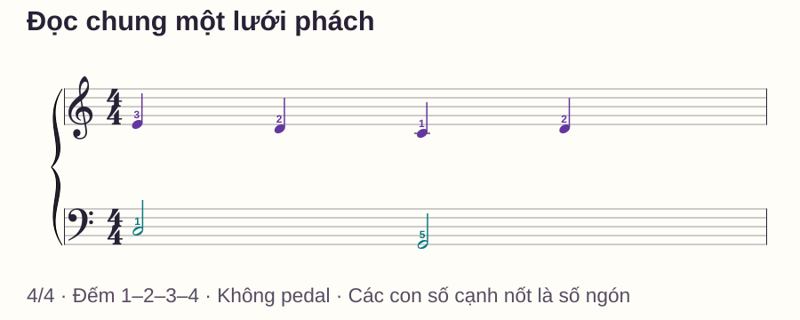

Kỹ thuật hai tay
Cách chơi piano hai tay: ghép từng phách, giữ nhịp đều
# Cách chơi piano hai tay: ghép từng phách, giữ nhịp đều
Bạn chơi tay phải khá trôi chảy, tay trái cũng nhớ phần của mình, nhưng vừa ghép lại thì cả câu dừng. Thử chậm hơn đôi khi vẫn không giúp, vì chưa rõ ở từng thời điểm cả hai tay phải làm gì.
Cách bắt đầu là đọc hai phần trên cùng một lưới thời gian: chỗ nào cùng chơi, chỗ nào chỉ một tay đổi, chỗ nào cần giữ hoặc nhả. Bài này giúp bạn chọn đúng mức khó và ghép được một ô nhịp có kiểm soát. Các mẫu đều có tên nốt, số ngón và cách đếm để thử trực tiếp trên đàn.
Trả lời nhanh
Để chơi piano hai tay, chọn một đoạn thật ngắn và làm rõ nhiệm vụ từng tay ở cùng tốc độ. Đặt sẵn nốt đầu, đếm một ô chuẩn bị, rồi ghép một hoặc hai phách. Nếu hai tay vào lệch, tập mẫu cùng nhịp; nếu tay giữ bị nhấc theo giai điệu, giảm còn một nốt nền và một lần đổi. Khi đã rõ thời điểm, nối các đoạn có phần chồng nhau để tránh dừng ở ranh giới. Chọn tốc độ đủ để biết trước cả hai hành động tiếp theo, không chỉ đủ để tay phải chạy được. Kết thúc bằng một lượt trọn đoạn và ghi đúng phách còn khó, thay vì chơi lại cả bài nhiều lần.
Vì sao biết từng tay vẫn chưa ghép được?
Khi tập riêng, bạn chỉ cần theo dõi một chuỗi phím. Khi ghép, cùng một số đếm có thể yêu cầu phải đổi nốt trong khi trái giữ nguyên. Chơi được hai phần riêng chưa cho biết bạn đã biết quan hệ thời gian giữa chúng hay chưa.
Không phải mọi đoạn đều cần học riêng từng tay thật lâu. Trong bài về luyện tập của Stephen Pierce, mục 7, tập từng tay được phân biệt với việc mặc định học toàn bộ tác phẩm bằng hai phần tách rời. Với một mẫu dễ, bạn có thể thử ghép sớm; với một chỗ chưa biết phím hoặc ngón, hãy tách đúng chỗ đó để làm rõ rồi ghép lại.
“Độc lập hai tay” là cách gọi thường gặp, nhưng mục tiêu trong các ví dụ dưới đây là phối hợp trên một nhịp chung. Tay giữ nốt không có quyền tự kết thúc trước khi đủ thời gian.
Chuẩn bị: hai vùng đàn và một nhịp đếm
C = Đô, D = Rê, E = Mi, F = Fa, G = Sol. C4 là Đô giữa; C3 thấp hơn một quãng tám. Mỗi Đô nằm bên trái một nhóm hai phím đen. Ngón cái là 1, trỏ 2, giữa 3, áp út 4, út 5 ở cả hai tay.

Đếm 1–2–3–4 hai lượt và gõ nhẹ theo từng số trước khi chơi. Các mẫu dùng nhịp 4/4: mỗi ô có bốn phách, nốt đen một phách, nốt trắng hai phách và nốt tròn bốn phách. Chưa dùng pedal để nghe và nhìn rõ việc nhả phím.
Hai tay đặt thoải mái, không ghì vai hoặc ép cả năm ngón xuống đàn. Yamaha hướng dẫn tư thế dùng vị trí ghế và tầm tay để giảm căng không cần thiết; không cần bắt mọi người giữ cùng một góc khớp cứng.
Chọn điểm bắt đầu bằng một phép thử
| Thử trong một lượt ngắn | Nếu khó ở đây | Bắt đầu bằng |
|---|---|---|
| Tìm được nốt đầu cả hai tay? | Còn đếm phím, đổi ngón tùy lượt | Chuẩn bị riêng vị trí và ngón |
| Gõ hai tay đồng thời bốn lần? | Hai tiếng luôn lệch hoặc nhanh dần | Mẫu cùng nhịp, ít nốt |
| Giữ trái trong khi phải đổi? | Trái nhả hoặc đánh lại theo phải | Mẫu giữ nền hai phách |
| Từng phần rõ nhưng đổi nền làm dừng? | Không biết chính xác phách đổi | Lưới cùng–phải–cùng–phải |
Bạn chỉ cần chọn một dòng cho buổi tập hôm nay. Đừng tăng số nốt, tốc độ và độ khó nhịp cùng lúc; khi lỗi xuất hiện sẽ khó biết thay đổi nào gây ra nó.
Bài tập 1: hai tay cùng nhịp
Đặt phải trên C4–D4–E4, trái trên C3–D3–E3. Chơi C–D–E–D ở cả hai tay, mỗi nốt một phách. Phải dùng 1–2–3–2; trái dùng 5–4–3–4. Nhả hai D cuối ở số 1 của ô kế.
Bắt đầu một cặp C3–C4 ở phách 1, giữ đến phách 2 rồi nhả và tiếp tục đếm hết ô. Khi tiếng bắt đầu khớp, thử đủ bốn phách hai lượt. Số ngón hai tay khác nhau dù tên nốt cùng đi lên.
Bài hai tay cùng nhịp có sheet, lịch tập và biến thể C–E–D–C nếu bạn cần ở lại mức này. Chưa cần thử cả ba bài tập trong cùng một buổi.
Bài tập 2: một tay giữ, một tay di chuyển
Trái chơi C3 bằng ngón 5 một lần ở phách 1, giữ hết bốn phách. Phải chơi C4–E4–D4–E4 bằng ngón 1–3–2–3, mỗi nốt một phách. Đếm thêm số 1 kế rồi nhả cả hai.
Điểm kiểm quan trọng nằm ở phách 2: phải đổi sang E4 nhưng trái không đánh lại hoặc nhả C3. Nếu khó, rút xuống hai phách rồi nhả ở phách 3. Đó là phiên bản ngắn, chưa phải mẫu giữ đủ bốn phách.

Âm trầm có thể nhỏ dần dù vẫn giữ phím. Không cố tăng lực vào đáy phím để duy trì độ to. Xem bài một tay giữ, một tay di chuyển để có sheet và phép thử đổi vai.
Bài tập 3: tay trái đổi sau hai phách
Ở mẫu này, đặt lại tay trái: ngón cái 1 ở C3, ngón út 5 ở G2 thấp hơn. Tay phải vẫn ở vùng Đô giữa. Phải chơi E4–D4–C4–D4 bằng ngón 3–2–1–2. Trái chơi C3 ở phách 1, đổi G2 ở phách 3; mỗi nốt trái giữ hai phách.

| Phách | Tay phải | Tay trái | Khẩu lệnh |
|---|---|---|---|
| 1 | E4 · ngón 3 | Chơi C3 · ngón 1 | Cùng |
| 2 | D4 · ngón 2 | Giữ C3 | Phải |
| 3 | C4 · ngón 1 | Nhả C3, chơi G2 · ngón 5 | Cùng |
| 4 | D4 · ngón 2 | Giữ G2 | Phải |
| Số 1 kế | Nhả D4 | Nhả G2 | Kết |
“Cùng–phải–cùng–phải” chỉ mô tả điểm phát âm mới của mẫu này; không áp dụng cho mọi bài hai tay. Ở phách 2 và 4, trái vẫn giữ nốt dù khẩu lệnh chỉ nhắc tay phải.
Ghép từng đoạn mà không tạo khoảng dừng mới
- Gõ lưới thời gian trên đùi: hai tay ở 1 và 3, chỉ tay phải ở 2 và 4. Làm hai lượt.
- Tập riêng trái C3 giữ hai phách, G2 giữ hai phách; thử một lượt phải ở cùng tốc độ.
- Ghép phách 1–2, kết khi tới phách 3. Khi rõ, ghép đủ ô.
- Nếu vấp tại lần đổi C3 sang G2, luyện riêng đoạn bắt đầu ở phách 2: đặt trước C3 đã xuống, đánh D4 ở 2, rồi cùng đổi ở 3. Đây là đoạn cắt để sửa chuyển tiếp, không phải cách đánh lại C3 ở phách 2 trong bản đầy đủ.
- Quay lại từ phách 1 và nối đủ ô một lần để kiểm đoạn sửa có hoạt động trong ngữ cảnh.
Bước 4 cần chuẩn bị trạng thái giữ trước khi bắt đầu đoạn giữa. Nếu bỏ chuẩn bị này, bạn đang luyện một hành động khác với điều xảy ra trong bản nhạc.
Chậm đến mức nào là đủ?
Thử máy đếm nhịp ở 50 phách/phút, một click một phách. Trước mỗi click, bạn cần biết cả hai việc sắp làm, chẳng hạn “phải D, trái giữ C”. Nếu click đến mà vẫn phải đoán phím, giảm nhiệm vụ hoặc tốc độ. Không dùng 50 như điều kiện thi đỗ.
Có thể khám phá một lần đổi khi chưa bật máy, với khoảng dừng có chủ ý để nhìn phím. Sau đó chọn lại tốc độ và kiểm một lượt có thời gian liên tục. Phân biệt hai lượt này để không nhầm “đã tìm được nốt” với “đã giữ được nhịp”.
Lịch tập mười phút
- Phút 0–2: làm phép thử, chọn đúng một mẫu và đặt phím.
- Phút 2–4: gõ thời gian, sửa riêng tay nếu chưa rõ ngón hoặc trường độ.
- Phút 4–7: ghép hai phách quanh điểm khó, có khoảng dừng để đánh giá giữa lượt.
- Phút 7–9: đưa đoạn sửa về một ô hoàn chỉnh, giữ cùng tốc độ.
- Phút 9–10: một lượt cuối và ghi “sai gì, ở phách nào, thử gì buổi sau”.
Ví dụ ghi tốt: “Phách 3, trái tới G2 muộn; buổi sau chuẩn bị đoạn 2–3.” Ghi “hai tay chưa độc lập” quá rộng để chọn cách tập tiếp.
Lỗi thường gặp
Tập mỗi tay đến tốc độ rất cao rồi mới ghép. Tốc độ riêng không bảo đảm bạn biết lúc hai tay gặp nhau. Thử ghép một đoạn nhỏ sớm ở tốc độ cả hai phần đều kiểm soát được.
Chơi lại từ đầu sau mọi lỗi. Bạn dành nhiều thời gian cho đoạn đã dễ. Xác định phách đầu chưa chắc và tập chuyển vào phách ấy, sau đó mới nối lại câu.
Đổi cả số ngón lẫn tốc độ trong một lượt. Khó phân biệt nguyên nhân lỗi. Ghi ngón đang dùng, giữ tốc độ và chỉ sửa một chuyển động trước.
Hai tay nhả cùng nhau theo thói quen. Kiểm lại tay nào còn trường độ. Giảm xuống một tay giữ, một tay đổi; bỏ pedal trong lúc kiểm nhiệm vụ.
Gồng hoặc nín thở để vượt chỗ khó. Dừng, nhả tay và giảm đoạn. Không dùng căng cơ làm dấu hiệu đã tập đủ nỗ lực.
Khi nào học tiếp?
Với mẫu đã chọn, thử ba lượt ở cùng tốc độ, có khoảng đặt lại giữa lượt: đúng phím, đúng lần đánh và nhả, không dừng trong ô, cơ thể vẫn thoải mái. Sau nghỉ ngắn, bắt đầu lại được mà không phải lần từ đầu một bài dài.
Nếu mẫu giữ đã ổn, thử đổi nền sau hai phách. Nếu mẫu 2:1 ổn, đưa cách đánh dấu cùng vào sang một câu nhạc dễ có cùng loại tiết tấu, rồi kiểm lại vì cao độ và ngón đã thay đổi. Không nhất thiết tăng tốc trước khi đổi sang âm nhạc.
Muốn bổ sung phần nền bằng nhiều nốt đồng thời, xem hợp âm piano cơ bản. Nếu điểm khó nằm ở khoảng im lặng hoặc độ dài nốt, ưu tiên cách đếm nhịp piano trước khi thêm hợp âm.
Câu hỏi thường gặp
Người mới có bắt buộc tập riêng từng tay trước không?
Không phải mọi mẫu đều cần. Hãy thử đoạn dễ với hai tay; nếu chưa biết phím, ngón hoặc nhịp của một phần thì tách phần đó để sửa rồi ghép lại.
Mất bao lâu để chơi được hai tay?
Một mẫu nhỏ và một bản nhạc dài có độ khó khác nhau. Dùng phép tự kiểm của mẫu đang tập để quyết định bước tiếp; không có một số ngày phù hợp cho tất cả người học.
Hai tay có luôn chia phải giai điệu, trái đệm không?
Không. Đây là cách bố trí phổ biến trong ví dụ nhập môn. Một tác phẩm có thể đổi vai hoặc chuyển giai điệu giữa hai tay.
Tôi thuộc nốt nhưng cứ ghép là quên, nên làm gì?
Thu về một hoặc hai phách, nói rõ cả hai hành động ở từng số đếm. Nếu chưa nói được việc sắp làm, đừng chỉ tăng số lần chơi toàn câu.
Tập gam hai tay có thay được các bài này không?
Gam là một dạng phối hợp với ngón và chuyển vị trí riêng. Nó không tự thay thế việc học tay giữ, tay nghỉ hoặc hai phần có tiết tấu khác nhau.
Có thể tập nếu chưa đọc được hai khuông cùng lúc không?
Có thể dùng bảng nốt trong bài để bắt đầu. Đồng thời học dần cách đọc nốt piano để áp dụng sang bản nhạc mới thay vì chỉ thuộc các ví dụ này.
Nguồn và ghi chú biên soạn
Tham khảo vai trò tập riêng/tập chung trong Stephen Pierce — 12 Practice Tips và tư thế trong Yamaha — Correct Posture. Mẫu nhạc, hình và bảng chọn lỗi được biên soạn riêng. Các số lượt và lịch tập là gợi ý thực hành, chưa phải kết quả thử nghiệm hiệu quả với người học.